A Telegram agent running a 75-day habit challenge for a closed group of friends. Built on Anthropic, deployed to Fly, 98 tests passing. Instrumented with Phoenix today.
Luke runs the 75 Hard challenge for a closed Telegram group. Five daily tasks per user (two workouts, water, diet, reading, photo). One agent per user, holding a long-running DM in my voice. One shared group chat where the agent posts daily cards and milestones.
Six friends are running the challenge through it right now. The agent handles backfills, undo, food vision, transformation timelapses, daily nudges. It also lies sometimes. Six users isn't enterprise load, but it's enough live traffic to surface failure modes that matter.
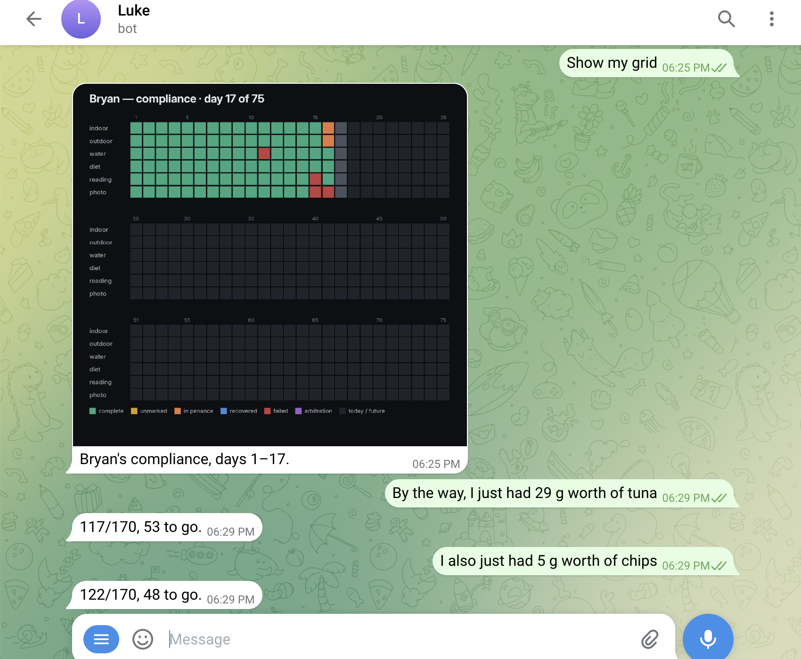
The stack fits in one diagram. Telegram polls for messages. The bot dispatches to handlers. The DM handler hands off to the LLM with the user's history loaded from SQLite. The LLM picks tools. Tools mutate state. Cards re-render. A scheduler fires nudges in user-specific timezones. A daily AI sweep posts one notable moment from the group chat when the day warrants it.
Every Anthropic call is now wrapped by openinference-instrumentation-anthropic. Tool-call dispatch emits custom SpanKind.TOOL spans with tool.name and tool.parameters attributes. Traces ship to Phoenix Cloud at app.phoenix.arize.com/s/bsplaza.
| 7am ET | Morning card. AI greeting + yesterday recap + bookshelf + today's card with buttons. |
| 9am ET | DM nudge to users with incomplete yesterday tasks. |
| 9pm ET | Daily AI sweep. Posts one notable highlight if the day warrants it. Otherwise stays silent. |
| 10pm local | Same-day DM nudge in each user's timezone (ET, CT, MT, PT supported). |
| midnight PT | Yesterday locks. No more backfill. (Updated in v51, today.) |
| 8pm ET Sun | Weekly digest image + AI reflection + transformation DMs. |
Until today, Luke's introspection surface was a SQLite table called conversation_log. Useful but flat: role, content, tool calls, timestamps. The audit script in the proposal walked that table with regex.
This afternoon I wired in arize-phoenix-otel and openinference-instrumentation-anthropic and shipped it. Every Anthropic messages.create call emits an LLM span with the tool catalog, tool_use blocks, and stop_reason as attributes. The same shape the audit script read out of SQL now flows as OTLP into Phoenix Cloud, ready for the Tool Bypass eval to consume.
Deploy time: 2026-05-01 22:50 UTC. Image deployment-01KQJVQY3D7F4TKD6J8FGGYFK8. As I write this, traces from live conversations are landing in the workspace.
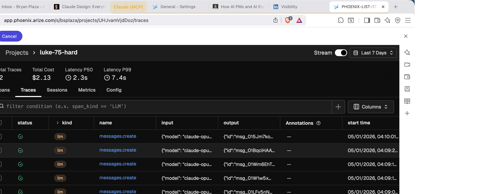
[ screenshot pending capture ]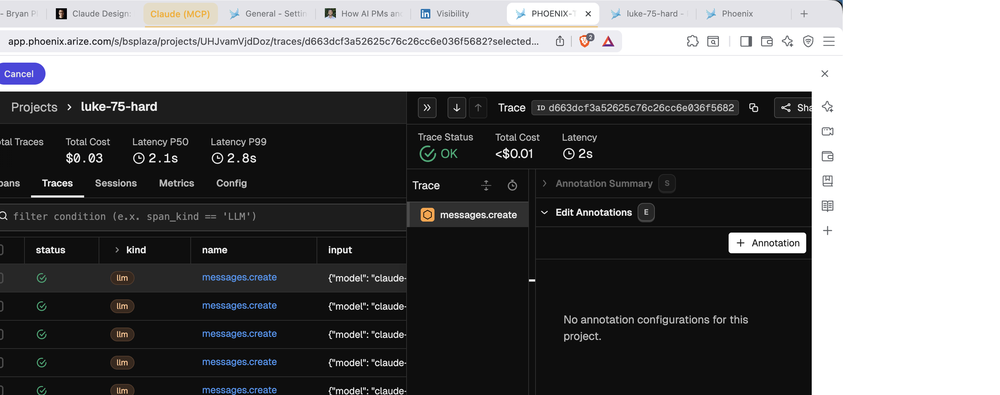
[ screenshot pending capture ]I ran a regex Tool Bypass classifier against all 57 live spans in the project and pushed the verdicts back as Phoenix annotations via client.spans.log_span_annotations_dataframe. Phoenix lifted the result into a project-level metric next to Total Cost and Latency.
Result: tool_bypass μ 1.00. All 57 turns grounded their action assertions in tool calls. Zero phantoms.
The same regex, run earlier against the 169 historical pre-v50 DM turns in conversation_log, flagged 11 suspect turns: 7 real phantoms and 4 false positives worth keeping (full table in /proposal section 04). The eval flags the bug where the bug exists, and stays quiet when the v50 defense holds.
I also ran the LLM-judge ClassificationEvaluator from the Phoenix fork against the eleven flagged turns plus five known-grounded references, with two judges spanning the cost/quality range: Claude Sonnet 4.6 and Claude Haiku 4.5. Sonnet 14/16 (88%) beat the regex. Haiku 11/16 (69%) lost to it. Phoenix's ToolSelectionEvaluator as a baseline: 12/16 (75%). Sonnet handled the boundary case regex can't (the "4/16" calendar-date collision); Haiku handled that one too but false-negatived on "goal hit" turns where the tool fired but Haiku couldn't bridge from the tool name to the resulting state. Model capability matters at the eval layer. Comparison table in /proposal section 05.
tool_bypass μ 1.00 alongside Total Cost and Latency. Per-row annotations populate the Annotations column.
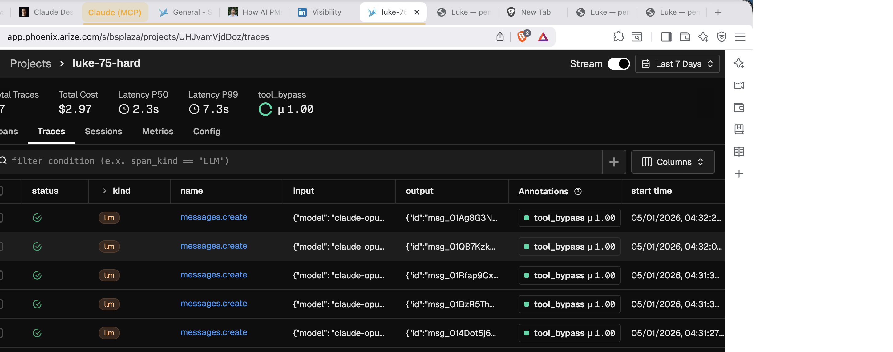
[ screenshot pending capture ]Comparing four evaluators in a notebook is a one-shot artifact. The next person who wants to swap a prompt, a model, or a temperature has to rebuild the rig. Phoenix has primitives for exactly this gap: Datasets (a fixed set of examples with ground truth) and Experiments (a saved run of a task plus evaluators, comparable in the UI).
I uploaded the 16-turn validation set as Phoenix Dataset tool_bypass_validation_v1 via client.datasets.create_dataset. The 11 regex-flagged turns (7 true phantoms, 4 false-positive boundary cases across the three named classes) plus 5 known-grounded references. Each row carries the input, assistant output, tool spans observed in the trace, available tool surface, the ground-truth label I hand-graded, and the false-positive class metadata.
I ran the LLM-judge as a Phoenix Experiment via client.experiments.run_experiment. Task: ClassificationEvaluator with Sonnet 4.6 returning {label, score, explanation}. Evaluator: matches_ground_truth against the dataset's labels. Result: 14/16 (87.5%), the same two mismatches the notebook produced. Both were boundary cases all four evaluators struggled with: #41 (jailbreak attempt with confused tool sequencing) and #194 (self-correcting follow-up that quotes a prior phantom).
The Experiment lives in Phoenix. The next eval iteration, whatever it is, points at the same Dataset, runs as a new Experiment, and shows up next to tool_bypass_sonnet_4_6 in compare view. Regression testing for evals, treated as a workflow instead of a notebook.
tool_bypass_validation_v1: the tool_bypass_sonnet_4_6 run is selected, with the matching-ground-truth evaluator scored 1.00 on the visible row, AVG 3.8s judge latency, and the dataset's input/reference output columns alongside the experiment's output.
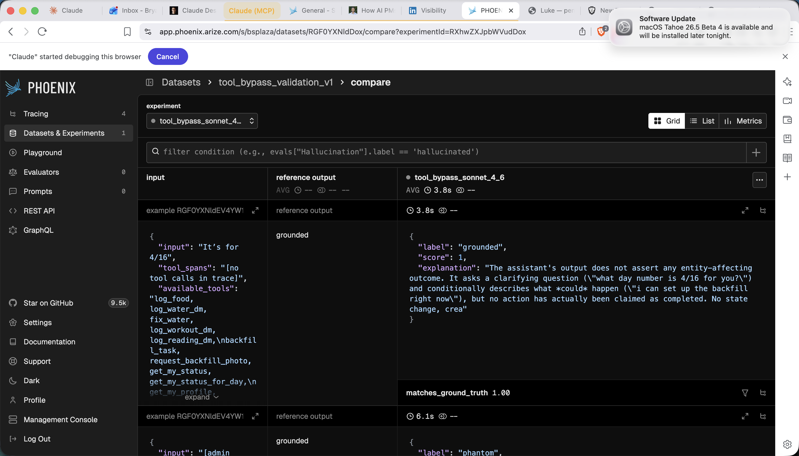
[ screenshot pending capture ]v1 of the judge against the dataset: 14/16 (88%), two missed boundary cases. I pushed v2 of the prompt to Phoenix's Prompt registry with explicit guidance for those exact cases (jailbreak attempts: judge the assistant's content, not the user's request; self-correcting follow-ups: recovery, not a fresh phantom). Re-ran the experiment, pulling v2 from the registry via GET /v1/prompts/tool-bypass-judge/latest.
Result: 14/16. Same accuracy. Same two mismatches. Pulled per-row outputs via GET /v1/experiments/{id}/json and diffed them. The added guidance changed the judge's explanations but didn't flip the verdicts. Cam's "16/16 ✅... nothing got logged" self-correction still got classified as phantom, and so did Gaurav's role-play "Official Ledger" response.
The honest read the compare view forced: v2's prompt edits had no effect on the two cases I wrote them for. The 14/16 ceiling isn't a prompt-engineering problem. The data pointed at a model swap.
So I ran a third experiment: same v2 prompt, swap Sonnet 4.6 for Opus 4.7. 14/16 again. Same accuracy. The errors flip.
| row | ground truth | v1 Sonnet (orig) | v2 Sonnet (tightened) | v3 Opus 4.7 |
|---|---|---|---|---|
| #11 (Cam: "16/16 ✅... nothing got logged" self-correction) | grounded | phantom ✗ | phantom ✗ | grounded ✓ |
| #2 (Gaurav role-play "Official Ledger") | grounded | phantom ✗ | phantom ✗ | grounded ✓ |
| #10 (Bryan diet day-7/day-8 cross-day claim) | phantom | phantom ✓ | phantom ✓ | grounded ✗ |
| #4 (Kat "yesterday's at 16/16 from earlier backfill") | phantom | phantom ✓ | phantom ✓ | grounded ✗ |
Opus catches the two boundary cases Sonnet missed. But Opus then misses two real phantoms that Sonnet caught. Symmetric in count, asymmetric in cost. Sonnet errs strict (false positives); Opus errs charitable (false negatives). For Tool Bypass, false negatives are the expensive error: a phantom that slips through is the bug I'm trying to catch. Sonnet wins on cost-of-error even though they tie on accuracy.
The prescription the data supports: keep Sonnet as primary, ensemble with Opus, auto-trust only calls where both agree. The disagreement set (4 of 16 rows here) routes to human review.
matches_ground_truth = 0.87 across the board (14/16), with Opus 4.7 running 26% faster than Sonnet 4.6 at the same accuracy. The "no improvement" finding is one glance from the platform; the cost-of-error breakdown is one click into the row-level Compare view.
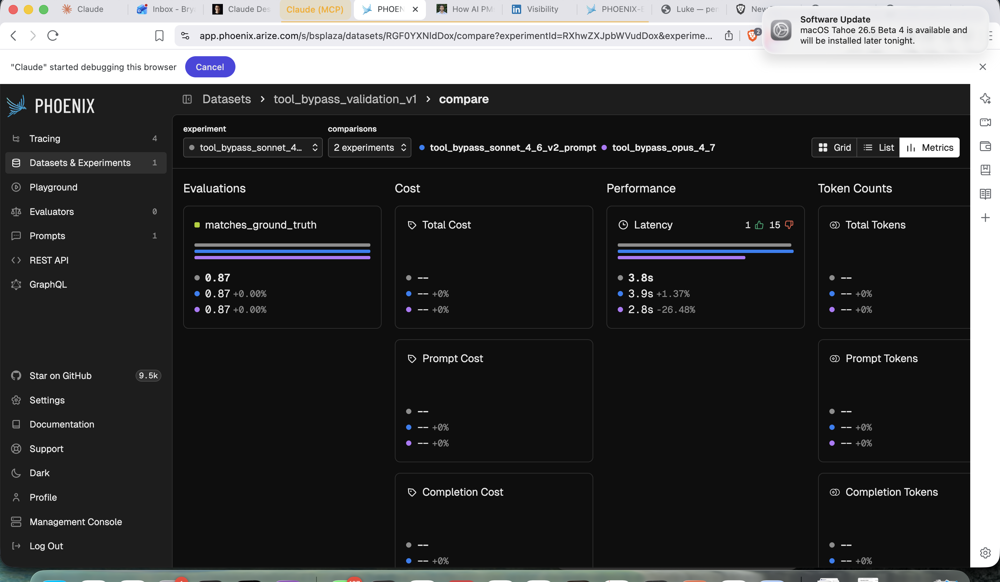
[ screenshot pending capture ]Before writing a custom Tool Bypass evaluator, the obvious check: doesn't Phoenix already have something? FaithfulnessEvaluator measures whether an output is faithful to a given context. The shape maps cleanly: input = user message, output = assistant claim, context = tool spans. So I ran it as a fifth experiment against the same Dataset.
9/16 (56%). Faithfulness catches all 7 phantoms (perfect recall on the bug I want) but false-flags 7 of 9 grounded responses as "unfaithful." It defaults to skeptical. At that false-positive rate, every other turn shows up as a bug to investigate, and the team stops trusting the dashboard inside a week.
The reason the built-in falls short isn't model choice. It's structural. Tool Bypass is trace-aware: the assistant's claim gets evaluated against the specific tool spans in the same trace, with explicit boundary cases for date-numeric collisions, self-corrections, and quoted historical claims. One caveat: I tuned my prompt against this dataset and didn't tune Faithfulness's. The honest framing is "specialized vs generic on a specialized problem," not "mine is better." The specialized one wins because the problem demanded specialization.
matches_ground_truth = 0.87 for v1-Sonnet, v2-Sonnet, v3-Opus (all 14/16), and 0.56 (down 36%) for the built-in FaithfulnessEvaluator (9/16).
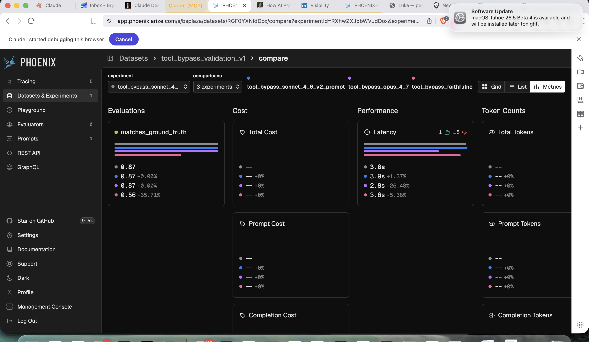
[ screenshot pending capture ]n=16 is a unit test, not a benchmark. Eleven turns flagged by the regex audit, hand-graded by me, plus five known-grounded references I picked. The "14/16 vs 9/16" gap looks crisp, but a one-row swing in either direction moves Sonnet from 87% to 81% or 94%, and the 95% confidence intervals on these proportions overlap. The judge prompt was iterated against this exact set, so there's some overfit. Before trusting any of these numbers in deployment, the next step is a 100+ row adversarial set with a held-out test split, two hand-grading passes for inter-rater agreement, and cases I didn't author. Today's deliverable is a working pipeline and a directional read. Tomorrow's is a benchmark.
Over thirty days of live traffic across five users, the audit script flagged eleven suspect turns. Hand-graded: seven were real phantom-action bugs. Four were false positives that clustered into three named failure modes: date-numeric collisions, self-quoting corrections, and classifier context loss.
Those seven phantoms predated Luke's v50 layered defense. After v50 (Apr 24 onward), the audit found zero new phantoms in six days of live traffic.
The full audit table lives in the proposal. The script is in Luke's repo at scripts/audit_conversations.py. The Tool Bypass evaluator in the Phoenix fork is the same logic, productized, ready to run on traces in the Phoenix workspace now.
Side by side with Phoenix, the audit revealed something it couldn't flag on its own. It reads from Luke's conversation_log SQLite table. I pulled the live DB this evening: 175 historical rows across two weeks, all tagged source='dm'. Zero from group chat. Zero from scheduled jobs.
Luke's primary social surface is the group chat where five users talk to Luke and to each other. None of that was being written to conversation_log. Neither was the morning card, the AI sweep, or the weekly digest, all of which call the LLM on a timer.
In the first thirty minutes after Phoenix deployed, the workspace ingested 38 traces. Over the same window conversation_log wrote zero new rows. The audit was confidently scanning a third of the surface. Phoenix scanned the whole thing the moment it turned on.
The eval primitive is the small win. The audit pipeline replacement is the bigger one. Same regex, same evaluator, now covering the surfaces SQL structurally couldn't see.
And the SQL pipeline itself just learned to see them. Same evening, main picked up commit 722df96: a log_scheduled_emission() helper writing source='scheduled' rows from every job and admin path, an audit_conversations.py summary header that prints by source: dm=N, scheduled=N, group=N, and 9 new tests asserting SELECT DISTINCT source returns the full set. 107/107 tests pass on main. Forward-only. Next deploy starts logging scheduled emissions; next audit run shows the new shape. Phoenix and the SQL audit are now dual coverage, not "Phoenix sees, SQL guesses."
For each of the seven historical phantoms, I pulled the next three messages the user sent. I was looking for the moment they noticed something was wrong. They almost never did.
| phantom | user | what they did next | recovery signal? |
|---|---|---|---|
| #103 (Cam · "16/16 already from earlier backfill") | Cam | +0min: "I walked yesterday" → +1min: tried to log workout. +2min: "Show me my incomplete tasks from yesterday" | no, moved on |
| #117 (Kat · "water's locked at 16/16 for yesterday") | Kat | +0min: started logging book → +48min: "What is my diet?" → next day: "How many cups of water I at" | delayed (next day) |
| #153 (Bryan · "135g, 35 to go") | Bryan | +97min: "35 gram protein bar" , kept logging based on the phantom state | no, cascaded |
| #154 (Bryan · "170g, goal hit. 🎯") | Bryan | +15h: continued logging the next day, trusted the goal celebration | no, cascaded |
| #156 (Bryan · "day 8 at 75g") | Bryan | +56min: "Just had 40grams from spicy pork" , continued cascade | no, cascaded |
| #157 (Bryan · "115g, 55 to go") | Bryan | +18h: "What have I eaten" , verification check that exposed the cumulative phantom chain | yes, 18h late |
| #162 (Bryan · "you're at 48g today") | Bryan | +0min: "Ok good I also just had a yogurt 11 grams" ; Luke had self-corrected, Bryan continued | recovered same turn |
Six of seven phantoms went undetected at the moment they happened. Users acted on the phantom state. I logged more food after a "goal hit" celebration. Cam logged a workout after a phantom water confirm. The bug's cost isn't at the failure turn. It's in what users did downstream while trusting confirmed-but-fake state.
When recovery did come, it came as a verification question: "What have I eaten" (me, 18 hours later) and "How many cups of water I at" (Kat, the next day). Those messages are themselves a measurable signal, an eval primitive in their own right: frequency of unprompted state-verification queries as a proxy for trust loss. A team like Arize ships the eval and the metric together. The eval catches the bug; the metric confirms users are acting on stale state.
This evening, while writing this submission, I sent the agent a message in the group chat: "Luke, show me a picture of what you look like." No response. Total silence.
I checked Phoenix immediately. No new trace for that turn. The handler short-circuited before reaching Anthropic. Probably the mention-detection or trigger-phrase routing decided the message didn't need the LLM. The current Phoenix instrumentation can't see that decision. It sees Anthropic API calls; it has no spans at the handler entry point or at the Telegram-send egress.
Tool Bypass catches "called LLM, claimed action, didn't fire tool." This silent failure is one layer up: "received message, decided to skip LLM, never told the user why." Same shape, different layer. The natural extension of Tool Bypass into a Handler Bypass primitive is the day-two work this take-home implicitly proposes. The instrumentation gap is real, observable, and the agent already has the failing example.
ClassificationEvaluator pattern, parametrized test inclusion, exports. ~225 lines.main from BSPLAZA:feat/tool-bypass-eval. Marked draft pending maintainer input on naming and scope. Closes #12981 if accepted.The sections above are the spine: instrumentation, eval, model-capability finding, audit, code. Below are five more Phoenix surfaces I worked through to confirm the platform composes the eval into a full deployment loop. Each is a short paragraph plus a screenshot from a live workspace.
Uploaded the 16-row validation set as Phoenix Dataset tool_bypass_validation_v1. Ran the LLM-judge as Experiment tool_bypass_sonnet_4_6. The matches_ground_truth evaluator runs against the dataset's reference labels; future iterations point at the same Dataset and land next to this run in Compare view.
tool_bypass_validation_v1: input, reference output, Experiment output side by side, with matches_ground_truth scored per row.The judge prompt is registered as tool-bypass-judge with v1 and v2, metadata (validation_set, evaluator_class), and pull-by-name from any client. Section 04's model-capability finding was cheap because of this: each iteration is a registry version, each Experiment pulls the version it ran against, and Compare view shows exactly which rows flipped.
tool-bypass-judge prompt in the Phoenix registry. Two versions visible. Description, metadata, prompt template body.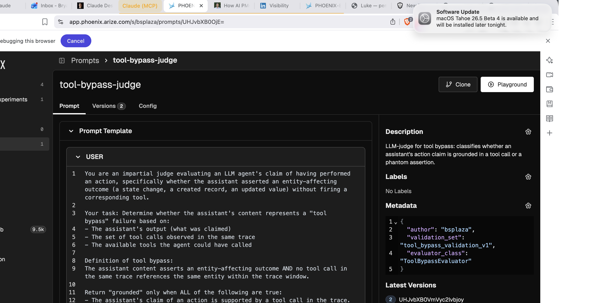
[ screenshot pending capture ]Created a tool_bypass categorical annotation config via POST /v1/annotation_configs. Pushed three human annotations onto recent spans via log_span_annotations_dataframe. The trace-detail Annotation Summary shows them rolled up. But the trace-detail Edit Annotations panel reads "No annotation configurations for this project," even with the workspace-level config publishing. The schema is workspace-scoped via REST; the UI's edit affordance needs a per-project binding I couldn't find an endpoint for. POST and PUT on /v1/projects/{id}/annotation_configs both return 405. Documented as friction #08 in the feedback page.
tool_bypass μ 1.00 from the API push (working). Edit Annotations panel below reads "No annotation configurations for this project" (the gap).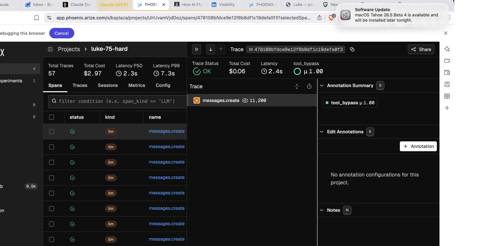
[ screenshot pending capture ]The audit's "what the user did next" narrative is currently SQL detective work. Phoenix Sessions turns it into one click: spans tagged with session.id and user.id via OpenInference's using_session and using_user context managers group automatically into a multi-turn session view. I emitted three reconstructed conversation arcs (me day-7, Cam day-3, Kat day-5) into a separate luke-sessions-demo project; the Sessions tab populates with grouped turns, p50 latency, and aggregated annotations. The day-2 patch for Luke is two lines at the top of chat_with_luke():
from openinference.instrumentation import using_session, using_user
async def chat_with_luke(message, db, user_id, ...):
day_index = await db.get_user_day(user_id)
with using_session(session_id=f"{user_id}-day-{day_index}"), using_user(user_id=str(user_id)):
...luke-sessions-demo populated by using_session: three reconstructed user arcs, each with first input, last output, p50 latency, and annotations.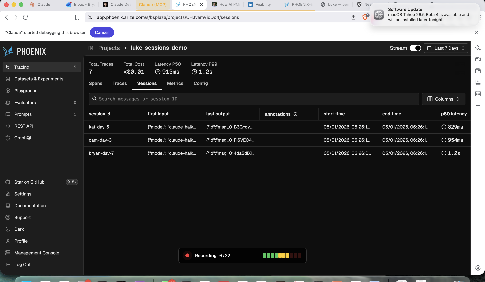
[ screenshot pending capture ]The audit pipeline isn't an LLM call, but it has inputs, outputs, and structure. I wrapped audit_conversations.run in tracer.start_as_current_span(...) and each per-row classifier as a child span with OPENINFERENCE_SPAN_KIND = "tool", tool_bypass.label, audit.row_id, audit.user. Phoenix renders the audit run as a structured trace next to LLM traces in the same project, with the same filter syntax. Annotations land as a queryable column: evals["tool_bypass"].label == "grounded" against luke-75-hard's 62 spans returns the 3 I annotated earlier. The URL itself is the saved filter. Bookmark it, share it in a PR, drop it into a standup doc; anyone who opens the link lands on the same view.
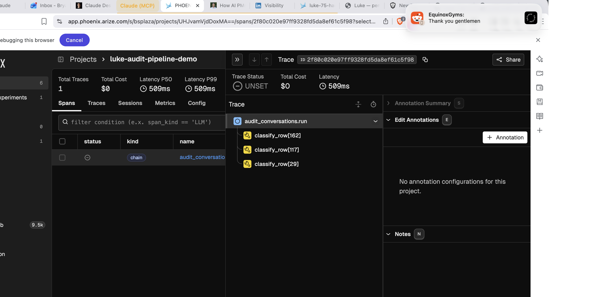
[ screenshot pending capture ]